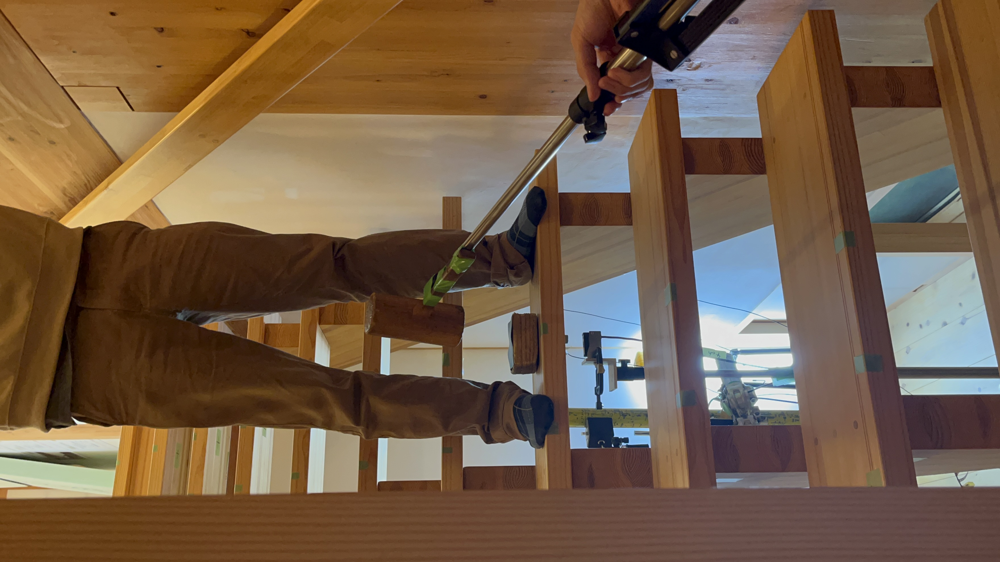
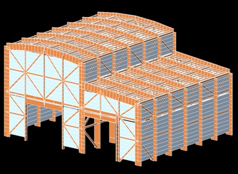

環境振動に対する人の感じ方を把握し、人々の生活の快適性向上を目指す。
建築物において発生する振動の問題は地震や風だけに限りません。例えば建築物内での人の歩行や、隣接する道路での自動車の走行などによる"環境振動"は、日常生活の快適性に大きな影響をあたえます。とりわけ近年は建築物の部材の軽量化などにより、軽微な加振力でも不快に感じる振動が発生し、建築物利用者の居住性に問題を及ぼす事例が多数報告されています。
こうした現状を踏まえ、本研究室では、人間の動作や交通状況によって発生する、床や階段での環境振動を定量的に評価する方法を研究しています。振動が発生する際の加速度や部材の変形を分析するとともに、実際に部材上における人の振動感覚への評価を把握することで、人々がどういった観点で振動の大きさや認知度合いを判断しているかを検討し、より人々の振動感覚に合致するような振動評価方法の確立を目指しています。
(上図：環境振動における官能検査の様子 下左図：階段における歩行振動の実験の様子 下右図：環境振動を検討する際のFEMモデル)